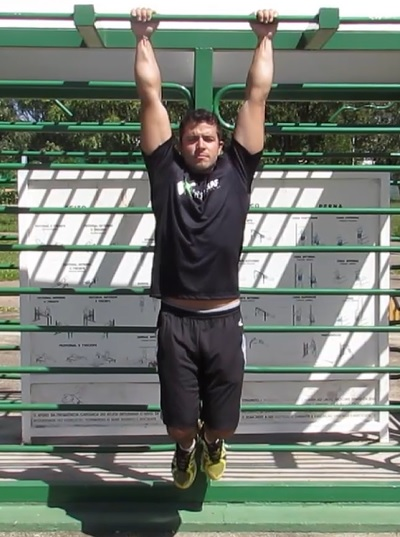

The first step is to perform an isometric hold on the bar, meaning simply hold the position for as long as you can. This will strengthen your forearm muscles and your grip. Like the image is showing

On this page you will see the first steps to make your first pull up